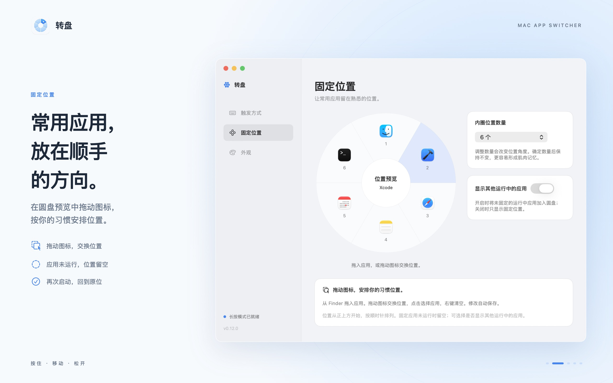

开始使用
- 从菜单栏开始启动转盘，按照首次引导设置。应用驻留在 Mac 顶部菜单栏，不显示 Dock 图标。
- 按住左侧 Control全新安装默认长按左 Control ⌃，约 0.15 秒后显示圆盘。保持按住，移动鼠标指向目标应用，松开切换。已有安装会保留你之前选的触发键。
- 找到适合自己的触发方式在“设置 → 触发方式”中，可改用左 Option、Command 或 Shift。也可录制组合快捷键，唤出圆盘后点击应用。
固定位置
把常用应用放在固定方向，形成自己的肌肉记忆。进入“设置 → 固定位置”，直接在圆盘预览中安排图标。
- 从 Finder 拖入应用，或点击位置选择应用；拖动已有图标可交换位置。
- 内圈可设为 4、6、8、10 或 12 个位置；设为 0 可关闭固定位置。
- 固定应用未运行时，位置保持空白。请先启动目标应用；转盘切换的是已运行应用。
- 关闭“显示其他运行中的应用”时，仅显示固定应用；开启后，其他运行应用加入外围圆环。

固定位置和拖动布局示例。外围圆环会随其他运行应用数量调整。
权限与控制
输入监控
长按模式需要“输入监控”权限，用于识别触发按键及取消手势。打开“系统设置 → 隐私与安全性 → 输入监控”，允许转盘；系统要求时，退出并重新打开应用。
你可以随时撤销此权限。菜单栏和录制的组合快捷键可在未授权输入监控时使用。
选择固定应用
沙盒仅保留对你选择的应用的只读访问，用于读取应用信息和图标，并通过安全作用域书签在重启后恢复访问。
应用不要求屏幕录制或辅助功能权限。更多数据处理细节请阅读隐私政策。
常见问题
按键没有反应怎么办？
确认长按的是设置中所选键的左侧，并持续约 0.15 秒；短按及右侧按键不会触发。检查输入监控权限；如果安装路径或签名变化，可能需要在系统设置里重新授权。然后从菜单栏退出并重启转盘，避免同时运行多个版本。
选了应用，为什么没有切换？
长按模式下，保持按住触发键，移到有效应用图标上再松开。中心、圆盘外侧和空位置会取消。组合键或菜单栏唤出模式下，点击图标切换。
圆盘里为什么会有空位置？
固定应用尚未运行时会保留空位。先启动该应用，它就会出现在固定方向。只使用固定应用时，也请检查是否已为位置分配应用。
能选择同一个应用的不同窗口吗？
转盘按应用切换，每个应用只出现一次。当前版本不区分单独窗口，也不提供窗口预览。
会替换系统 Cmd+Tab 吗？
不会修改系统的 Cmd+Tab 绑定；转盘提供另一种应用切换方式，可以和系统切换器一起使用。
如何切换深色外观或退出应用？
打开菜单栏中的“设置 → 外观”，选择浅色或深色圆盘。需要退出时，使用转盘菜单栏菜单中的“退出”。
退款、购买和更新问题找谁？
购买、退款及更新由 Apple 的 App Store 处理。退款可通过 Apple 报告问题页面申请；功能和故障问题可通过下方支持入口反馈。
联系与反馈
由 YE JINMIAN 开发与维护。使用问题、错误报告、功能建议或隐私问题，请到公开支持仓库反馈，中文和英文均可。
请提供 macOS 版本、转盘版本、触发方式、复现步骤及预期结果。截图请先遮住私人内容。